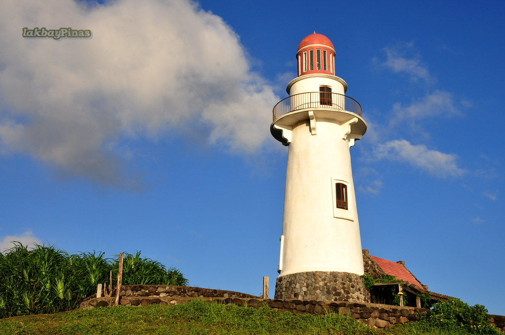
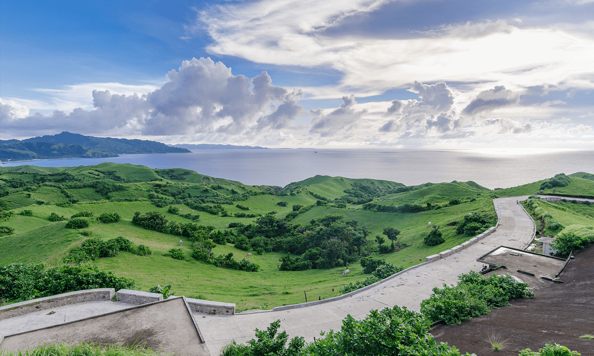
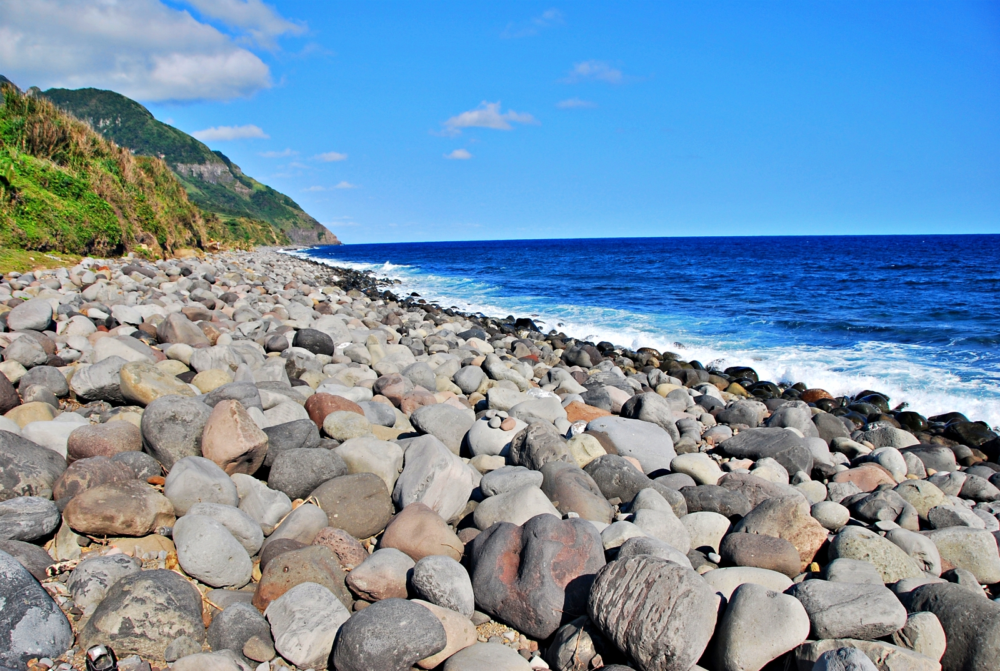

Lighthouse

Starting from Basco town center, this short ride leads to the Basco Lighthouse atop Naidi Hills. The path is a gentle slope shaded with trees, becoming steeper as you approach the lighthouse. The effort is rewarded with panoramic views of Batan Island, including Mount Iraya and the surrounding sea.
Vayang Rolling Hills

This route features undulating terrains with multiple ascents and descents. The climb can be tough, but reaching the top offers breathtaking views of rolling green hills meeting the sea. It's a favorite spot for both cyclists and photographers.
Valugan Boulder Beach

A short ride from Basco leads to this unique beach known for its smooth, round boulders. The road moderately slopes down, allowing for a leisurely ride. It's an excellent spot to witness the sunrise and enjoy the serene coastal environment.